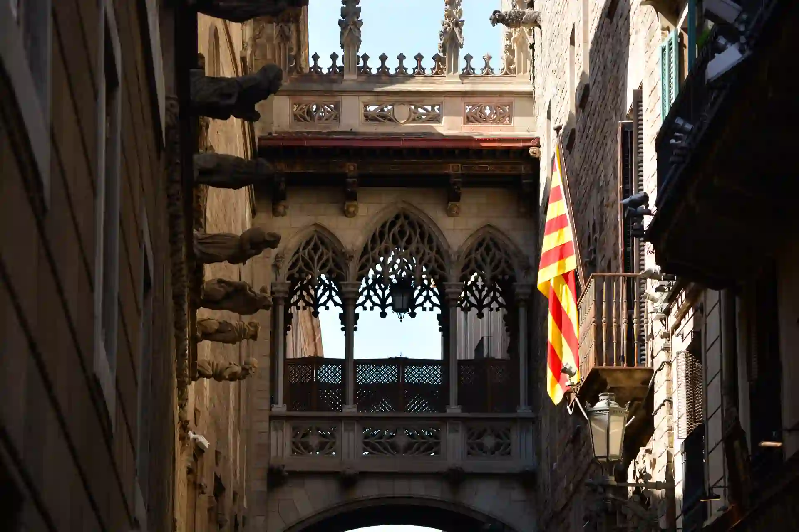

Barcelona
¿Por qué el Barrio Gótico no es tan gótico como parece?
El Pont del Bisbe parece gótico del siglo XV, pero es de 1928: buena parte del Barri Gòtic se construyó para la Exposición de 1929.
Un puente que nació en 1928
El Pont del Bisbe es la imagen más fotografiada del Barri Gòtic: arco calado, gárgolas y, bajo el arco central, una calavera de piedra que nadie ha explicado nunca del todo. Parece del siglo XV. Es de 1928. Lo diseñó Joan Rubió i Bellver, discípulo de Gaudí, en estilo gótico flamígero, para dar un paso elevado y privado entre el Palau de la Generalitat y la Casa dels Canonges, donde vivían los presidentes catalanes. Cuando presentó el proyecto, parte de Barcelona ya lo criticó por falso: la ciudad entera se preparaba para recibir la Exposición Internacional de 1929 y necesitaba un barrio medieval fotogénico a tiempo.
El arquitecto que lo desmintió
Rubió i Bellver no se hacía ilusiones sobre lo que estaba construyendo. Él mismo escribió, años más tarde, que «en el Barrio Gótico no hay más de seis casas que con buena voluntad pueden denominarse góticas». Lo dijo el hombre que había firmado uno de los edificios más fotografiados del barrio, y que sabía, mejor que nadie, cuánto de ese aire medieval era piedra nueva cortada para parecer vieja.
Un plano de 1408 que se construyó en el siglo XX
La Catedral de Barcelona sí es gótica, del siglo XIV. Su fachada principal —la que da a la Plaça Nova— no lo es: se construyó entre 1906 y 1913, financiada por el banquero Manuel Girona, sobre un diseño de 1408 firmado por el maestro Carlí que en su momento jamás se llegó a levantar por falta de dinero. Es decir: la fachada "gótica" más fotografiada de Barcelona no es la copia de un edificio medieval real, es la construcción tardía de un plano medieval que nunca fue más que un plano. Durante quinientos años la Catedral tuvo ahí un muro desnudo; hoy tiene agujas, rosetón y santos de piedra recién tallada.
La casa que cambió de dirección
No todo es maquillaje de los años veinte: la Casa Padellàs, en la Plaça del Rei, es un palacio auténtico del siglo XVI. Pero tampoco estuvo siempre ahí. La desmontaron piedra por piedra de su ubicación original, en el carrer dels Mercaders, y la reconstruyeron en 1931 para salvarla de la apertura de la Via Laietana. Al levantar sus nuevos cimientos aparecieron restos de la Barcino romana — el hallazgo que hoy se recorre bajo tierra en el Museu d'Història de Barcelona. Ni los edificios genuinamente antiguos están donde los construyeron.
Una ciudad maquillada para una Exposición
Nada de esto fue improvisado. La Sociedad de Atracción de Forasteros, el organismo que promocionaba Barcelona desde 1908, necesitaba un barrio antiguo presentable antes de 1929; el ayuntamiento reubicó portadas, ventanales y remates góticos de otros edificios de la ciudad y encargó piezas nuevas donde faltaban. Décadas después, en 1958, el propio arquitecto municipal responsable de buena parte de esas reformas, Adolf Florensa, admitió por escrito que el nombre "Barrio Gótico" había sido, sobre todo, un reclamo turístico.
Lo auténtico, camuflado entre lo falso
La confusión no es que el Barri Gòtic sea falso de principio a fin: es que mezcla capas reales de dos mil años con un barniz de los años veinte que las iguala todas a simple vista. Bajo ese barniz hay una puerta romana de la Barcino de Augusto, un antiguo call judío anterior a 1391 y muros que todavía muestran el impacto de bombas de 1938. Lo gótico auténtico existe en el barrio, pero es minoría; lo romano y lo medieval real conviven, sin cartel que lo anuncie, con la fachada que se construyó pensando en los visitantes de 1929.
Nada de esto le resta encanto al Gòtic: solo reparte el misterio en más capas de las que parece a primera vista. El secreto del Barrio Gótico recorre diez paradas por este mismo barrio, entre piedra romana, judía, gótica de verdad y gótica de 1928, y no avisa de antemano cuál es cuál: eso hay que descubrirlo caminando.